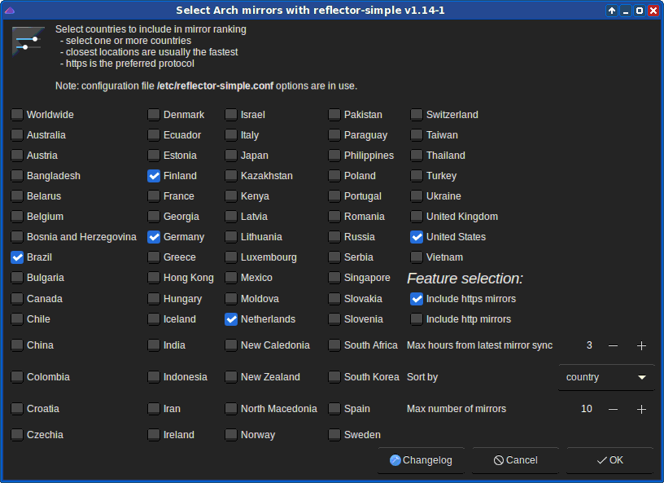

Simple GUI for the reflector command.
Screenshot:

/etc/reflector-simple.conf is
supported/etc/reflector-simple.conf exists, the GUI uses it
by defaultreflector command. Use command reflector -h
for more info/etc/reflector-auto.conf is still supported, but will no
more be supported after year 2020./etc/reflector-simple.conf exists, then
/etc/reflector-auto.conf is not usedVersion 1.15.2-1 changed reflector-simple by changing
the setting Max number of mirrors (which uses
reflector's --number option) to Max number of freshed
mirrors (uses reflector's --latest option).
The old behaviour can be achieved by using an environment variable
REFLECTOR_SIMPLE_PREFER_NUMBER with value "yes", e.g.
REFLECTOR_SIMPLE_PREFER_NUMBER=yes reflector-simpleVersion 1.16.1-1 changed the method of finding the country code of a
user. Now user can change the value of variable
REFLECTOR_SIMPLE_COUNTRY_METHOD in file
/etc/reflector-simple-tool.conf and see what's the best
(=fastest) method (number from 0 to 5) of fetching the country code.
This may have a great effect on how quickly
reflector-simple shows its first window when started.
reflector syntax:
@/path/to/another/config.conf--country-exclude (this option is not found in
reflector)# A part of file /etc/reflector-simple.conf:
# ...
@/etc/reflector_excludes.conf
-c DE,FR,"United Kingdom"
--country-exclude LU
# ...